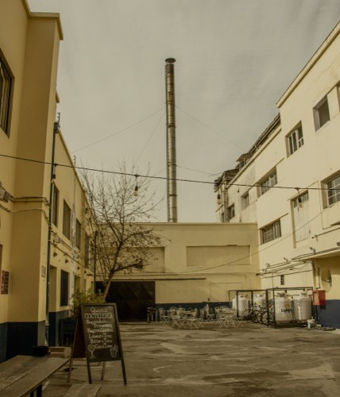

Recuperamos un edificio histórico construido en 1940
Somos un punto de encuentro para artistas, artesanos y creadores con visión de transformación dentro de un barrio vivo que acoge la diversidad cultural.
4,7970 reseñas en Google

Desde 1940- 1940año de construcción del edificio
- 13fábricas y talleres en el directorio
- 400 m²de Patio Central, abierto a todo público
- $0la entrada: siempre liberada
Este fin de semana
¿Qué abre el día que vienes?
Cada fábrica tiene su propio horario. Elige el día y lo que te gusta, y te mostramos quiénes te esperan.
Entérate de las próximas actividades
Recibe toda la movida de nuestra Factoría: agenda, invitaciones, descuentos especiales y mucho más. Regístrate en el boletín digital y no te pierdas nada.
- →Fechas de las visitas guiadas antes de que se llenen los cupos
- →Invitaciones a las inauguraciones de Factor F
- →Ferias, festivales y música del mes
Revisa tu correo para confirmar la suscripción.
Fábricas y talleres
Factoría Franklin promueve la producción de artes y oficios, rescatando la esencia del barrio. Nuestras instalaciones incluyen restaurantes, cafeterías, espacios públicos, talleres y producción artesanal.

Ojos del Alma
8 artistas y 86 obras sobre la pregunta: ¿qué ocurre entre el diagnóstico y la sanación? Abierta hasta el 8 de noviembre.
Haz tu evento en la Factoría
Patio Central de 400 m² y Galpón Multiuso de 480 m², para acciones públicas o privadas. La primera edición de Bacán tu Casa recibió a más de 6.300 personas.
Ver espacios y cotizar